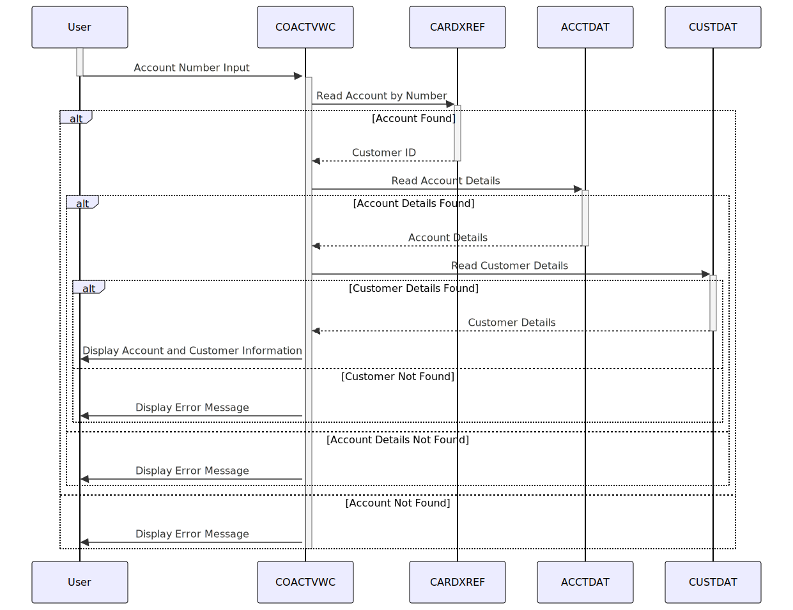

Gerado em: 1 de outubro de 2024
Título do Documento: Funcionalidade de Visualização de Conta de Cartão de Crédito
Descrição Resumida:
Este documento descreve as especificações técnicas para a funcionalidade “Visualização de Conta” dentro de um sistema de gerenciamento de cartão de crédito. Ele descreve o processo de recuperação e exibição de detalhes da conta do cartão de crédito por usuários autorizados. A funcionalidade envolve validar a entrada do usuário (número da conta), acessar vários arquivos de dados (CARDXREF, CUSTDAT, ACCTDAT), recuperar informações relevantes da conta e do cliente e apresentar os dados recuperados em um formato amigável.
Histórias do Usuário:
Como representante de atendimento ao cliente, preciso visualizar os detalhes completos da conta de cartão de crédito de um cliente para que eu possa responder às suas perguntas com precisão e eficiência.
Épico Relacionado:
2 - Gestão de Contas
Requisitos Técnicos:
Fluxo de trabalho:
- Entrada do Número da Conta:
- O usuário fornece um número de conta de cartão de crédito por meio de um campo de entrada de tela (
ACCTSIDO no mapset COACTVW).
- Validação do Número da Conta:
- O programa valida o número da conta inserido:
- Verifica se o número da conta tem 11 dígitos.
- Verifica se o número da conta é numérico.
- Se alguma validação falhar, exibe uma mensagem de erro apropriada (
WS-RETURN-MSG) na tela (ERRMSGO no mapset COACTVW).
- Recuperar ID do Cliente (se o número da conta for válido):
- O programa lê o arquivo
CARDXREF usando o número da conta (WS-CARD-RID-ACCT-ID) como chave.
- Se encontrado, recupera o ID do cliente correspondente (
XREF-CUST-ID) do registro CARDXREF.
- Se não for encontrado, define o sinalizador
INPUT-ERROR, preenche WS-RETURN-MSG com uma mensagem de erro apropriada e vai para a etapa 7.
- Recuperar Detalhes da Conta:
- O programa lê o arquivo
ACCTDAT usando o número da conta (WS-CARD-RID-ACCT-ID) como chave.
- Se encontrado, preenche a estrutura
ACCOUNT-RECORD com os detalhes da conta recuperados.
- Se não for encontrado, define o sinalizador
INPUT-ERROR, preenche WS-RETURN-MSG com uma mensagem de erro apropriada e vai para a etapa 7.
- Recuperar Detalhes do Cliente:
- O programa lê o arquivo
CUSTDAT usando o ID do cliente (CDEMO-CUST-ID) recuperado na etapa 3 como chave.
- Se encontrado, preenche a estrutura
CUSTOMER-RECORD com os detalhes do cliente recuperados.
- Se não for encontrado, define o sinalizador
INPUT-ERROR, preenche WS-RETURN-MSG com uma mensagem de erro apropriada e vai para a etapa 7.
- Exibir Informações da Conta e do Cliente:
- Preenche os campos da tela (mapset
CACTVWAO) com as informações da conta e do cliente recuperadas.
- Lidar com a Entrada do Usuário:
- O programa permite que o usuário:
- Insira um novo número de conta.
- Navegue para outras funcionalidades (por exemplo, visualizar histórico de transações, atualizar informações da conta) usando as teclas PF.
- Saia do programa.
Formatos de Dados:
- Número da Conta (
WS-CARD-RID-ACCT-ID): PIC 9(11) - Valor numérico de 11 dígitos.
- ID do Cliente (
CDEMO-CUST-ID): PIC 9(09) - Valor numérico de 9 dígitos.
Tratamento de Erros:
- Erros de Arquivo: Se ocorrer um erro durante as operações do arquivo (leitura, gravação), uma mensagem de erro apropriada (
WS-FILE-ERROR-MESSAGE) será gerada, incluindo o nome do arquivo, operação e códigos de resposta CICS.
- Erros de Validação de Dados: Se alguma validação de dados falhar (por exemplo, formato de número de conta inválido), uma mensagem de erro (
WS-RETURN-MSG) será exibida ao usuário.
Modelos Relacionados:
CARDXREF:
XREF-CARD-NUM String: Número do cartão de crédito.XREF-CUST-ID Integer: ID do Cliente.XREF-ACCT-ID String: ID da Conta.
ACCTDAT:
ACCT-ID String: ID da Conta.ACCT-CUST-ID Integer: ID do Cliente.ACCT-STATUS String: Status da conta.ACCT-BALANCE Decimal: Saldo atual da conta.ACCT-CREDIT-LIMIT Decimal: Limite de crédito da conta.
CUSTDAT:
CUST-ID Integer: Identificador único para um cliente.CUST-NAME String: Nome completo do cliente.CUST-ADDRESS String: Endereço do cliente.CUST-PHONE String: Número de telefone do cliente.
Configurações:
- Caminhos de Arquivo:
CARDXREF: LIT-CARDXREFNAME-ACCT-PATH - CXACAIXACCTDAT: LIT-ACCTFILENAME - ACCTDATCUSTDAT: LIT-CUSTFILENAME - CUSTDAT
- Mensagens de Erro:
WS-RETURN-MSG: Contém várias mensagens de erro com base nos resultados da validação e erros de arquivo.
Melhorias de Código:
- Tratamento de Erros Padronizado: Implemente uma abordagem mais centralizada e consistente para o tratamento de erros, potencialmente usando um módulo dedicado ao tratamento de erros. Isso melhoraria a manutenção e reduziria a duplicação de código.
- Validação Aprimorada: Adicione verificações de validação mais robustas para entrada do usuário, como verificar o comprimento do número da conta e o tipo de dados.
- Feedback do Usuário Aprimorado: Forneça mensagens mais informativas e fáceis de entender para guiar o usuário pelo processo, especialmente em caso de erros.
- Modularidade do Código: Divida o programa em módulos menores e mais gerenciáveis para melhor organização e legibilidade.
Melhorias de Segurança:
- Limpeza de Entrada: Implemente a limpeza de entrada para evitar vulnerabilidades como injeção de SQL.
- Autenticação e Autorização: Garanta que apenas usuários autorizados possam acessar a funcionalidade “Visualizar Conta” e informações confidenciais da conta.
- Log: Implemente mecanismos de log para rastrear ações do usuário, acesso a dados e quaisquer erros encontrados.
Diagrama Conceitual:

–Made by “Smart Engineering” (by Compass.UOL)–